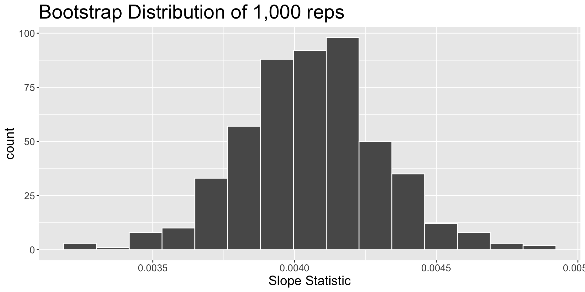
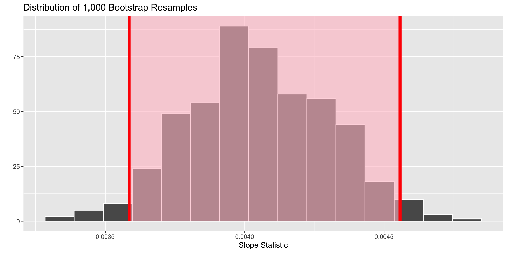
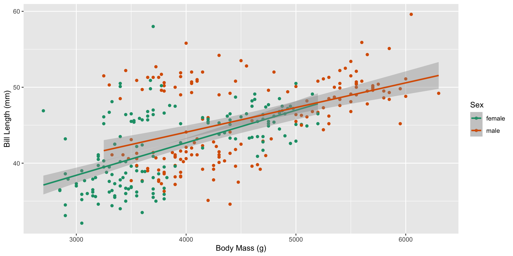

Confidence Intervals – Real Life Sampling Distributions
Course Updates
- Statistical Critique 1 revisions are due tonight
- Midterm Projects will be graded by Sunday
- Lab 6 revisions will be due next Thursday
Don’t forget reflections!
If your reflections are not present by the deadline for revisions, your revisions are not eligible to be regraded. Please don’t forget your reflections!
What if I only have one sample?
Approximate the variability you’d expect to see in other samples!
. . .
Bootstrapping!
A Bootstrap Resample
. . .
- Assumes the original sample is “representative” of observations in the population.
. . .
- Uses the original sample to generate new samples that might have occurred with additional sampling.
. . .
We can use the statistics from these bootstrap resamples to approximate the true sampling distribution!
Why do we want a sampling distribution?
Estimating a population parameter
. . .
- We are interested in knowing how a statistic varies from sample to sample.
. . .
- Knowing a statistic’s behavior helps us make better / more informed decisions!
. . .
- This helps us estimate what values are more or less likely for the population parameter to have.
Confidence Intervals
. . .
Capture a range of plausible values for the population parameter.
. . .
Are more likely to capture the population parameter than a point estimate.
How do I get this plausible range of values?
. . .
Bootstrapping!
. . .
- From your original sample, resample with replacement the same number of times as your original sample.
. . .
This is your bootstrap resample.
. . .
- Repeat this process many, many times.
. . .
- Calculate a numerical summary (e.g., mean, median) for each bootstrap resample.
. . .
These are your bootstrap statistics
Bootstrap Distribution
. . .
a distribution of the bootstrap statistics from every bootstrap resample
. . .
Displays the variability in the statistic that could have happened with repeated sampling.
. . .
Approximates the true sampling distribution!
Penguins!


Statistic: \(\beta_1\)
The relationship between penguin’s bill length and body mass for all penguins in the Palmer Archipelago
In this sample of 344 penguins…
\[\widehat{\text{bill length}} = 26.899 + 0.004 \times \text{body mass}\]
. . .
What slope could have happened in a different sample of penguins?
Generating bootstrap resamples and calculating bootstrap statistics
. . .
Step 1: specify() your response and explanatory variables
. . .
Step 2: generate() bootstrap resamples
. . .
Step 3: calculate() the statistic of interest
Step 1: Specify your variables!

Step 2: Generate your resamples!
. . .
reps – the number of resamples you want to generate
"bootstrap" – the method that should be used to generate the new samples
Your turn!
. . .
Why do we resample with replacement when creating a bootstrap distribution?
When we resample with replacement from our original sample what are we assuming about our sample?
Step 3: Calculate your statistics!
. . .
"slope" – the statistic of interest
The final product
visualize(boot1) +
labs(title = "Distribution of 1,000 Bootstrap Resamples",
x = "Slope Statistic",
y = "")
A plausible range of values for \(\beta_1\)
visualise(boot1) +
shade_confidence_interval(endpoints = boot1_CI,
color = "red",
fill = "pink") +
labs(title = "Distribution of 1,000 Bootstrap Resamples",
x = "Slope Statistic",
y = "")
The 95% confidence interval is…
get_confidence_interval(boot1,
level = 0.95,
type = "percentile")| Lower Bound | Upper Bound |
|---|---|
| 0.00355 | 0.00453 |
. . .
What do we hope is captured by this interval?
How do we interpret this interval?
. . .
“We are 95% confident the slope of the relationship between bill length and body mass for all penguins in the Palmer Archipelago is between 0.00355 and 0.00453
. . .
“For every 1 gram increase in a penguin’s body mass, we are 95% confident the length of the penguin’s bill will increase between 0.00355 and 0.00453mm.
Classic interpretation mistakes
. . .
“95% of the time the population parameter would fall between 0.00355 and 0.00453.”
. . .
“We are 95% confident the sample statistic is in our interval.”
Scaling to Multiple Linear Regression
How does the relationship between bill length and body mass change based on a penguin’s sex?

What changes?
The original sample of 344 penguins were broken down into the following groups (plus 11 NA values):
| Sex | Sample Size |
|---|---|
| female | 165 |
| male | 168 |
. . .
Before we resampled with replacement 344 times.
If we resample with replacement 333 times, are we guaranteed to get 165 female penguins and 168 male penguins in each sample?
Getting our Observed Statistic
Step 1: Fitting our Model
Syntax changes
When we have multiple explanatory variables, we need to use the “tilde” (~) syntax to specify our model. We also use the fit() function instead of the calculate() function.
Getting our Observed Statistic
Step 2: Finding our Statistic
| term | estimate |
|---|---|
| intercept | 25.5713814 |
| body_mass_g | 0.0042787 |
| sexmale | 5.5160611 |
| body_mass_g:sexmale | -0.0010301 |
What is our observed statistic for this investigation?
Generating Bootstrap Fits
Obtaining a Bootstrap Confidence Interval
How do we interpret this interval?
| Lower Bound | Upper Bound |
|---|---|
| -0.0020159 | -0.0000684 |
. . .
We are 90% confident that the for every 100 gram increase in a penguin’s body mass (~0.25lbs), the length of a male penguin’s bill is between 0.068 and 2.02mm shorter than a female penguin’s bill.
How do body mass and flipper length influence a penguin’s bill length?
. . .
observed_fit <- penguins %>%
specify(bill_length_mm ~ body_mass_g + flipper_length_mm) %>%
fit()
bootstrap_fits <- penguins %>%
specify(bill_length_mm ~ body_mass_g + flipper_length_mm) %>%
generate(reps = 1000, type = "bootstrap") %>%
fit()Visualizing Bootstrap Distributions
visualise(bootstrap_fits)
Obtaining and Interpreting Confidence Intervals
| term | Lower Bound | Upper Bound |
|---|---|---|
| body_mass_g | -0.0002028 | 0.0015676 |
| flipper_length_mm | 0.1728445 | 0.2663523 |
| intercept | -9.4472566 | 3.5454740 |
. . .
How would you interpret the confidence interval for flipper_length_mm? For body_mass_g?
Holding the Other Variable(s) Constant
Holding body mass constant, we are 95% confident that a 1mm increase in flipper length is associated with between a 0.173 and 0.266mm increase in a penguin’s bill length.
. . .
Holding flipper length constant, we are 95% confident that a 100 gram increase in body mass is associated with between a 0.203mm decrease and a 0.157mm increase in a penguin’s bill length.